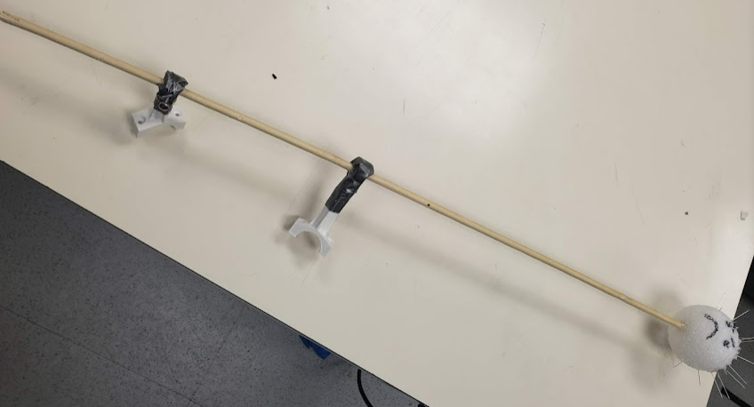
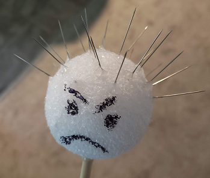

- Payload
- TX2
- Orbitty Carrier Board
- Two 2.4 GHz Antenna
- Digitkey part: 627-1069-ND
- Manufacturer: Antenova
- Manufacturer part number: SRF2W021-100
- Gimbal:
- Purchase Link: rc-wing
- Manufacturer: Tarot
- Manufacturer part number: Tarot T-3DV
- DC-DC Downcoverter
- Logitech Wecam
- Micro-micro USB Cable
- Connects TX2 to autopilot.
- Provided by lab.
- XT30 Connector
- Connects downcoverter to battery power.
- Provided by lab.
- Misc. Hardware from lab.
- Carbon Plate
- 3D Model: Google Drive Link
- However this carbon plate was modified after manufacturing. To accommodate the height of the drone all components were mounted to the bottom of the plate, this required the gimbal to be shifted to the DC-DC converter side to clear the TX2. To do this two new holes were drilled and two of the existing ones used. An aluminum adaptor plate was also made to hold the gimbal from the bottom plate and let the gimbal float on the rubber mounts. The last additional modification to the mounting plate was the extension of one of the vent holes to allow access to the TX2 battery connection screws without having to dismantle it; this was done by drilling a hole and filing to it.
- Impaling Device
- For the impaling device we used a marshmallow skewer with a foam ball in the tip covered in sewing needles, resembling a morningstar.
-  
- Mounts 3D Model: Google Drive Link
- This model is far from perfect, the tip of the mount has to be clocked depending on which arm of the drone is mounted too, this is why it is split into two parts. The split allows you to find the correct angle on the drone and glue it inplace. The mount connects to the drone arms in a similar fashion as connecting rods to a crankshaft. When printing, print the collar part laying down and the rod parts standing up, this will prevent splitting by the screws being too tight.
- Gimbal / Camera Adapter
- For the gimbal to C930 adapter we designed a couple of models, the first used the tripod screw in the camera (Link). This idea was quickly discarded and a vertical mount was designed (Link), the vertical mount removed some resolution since the video has to be recorded in portrait mode, for this we designed a horizontal mount (Link). The horizontal mount was however never used since we were able to find the balloon with the more stable, based on its center of gravity compared to the gimbal arms, vertical mount.
- Non-payload
- Ethernet to USB adapter
- Ethernet Cable
- USB Dongle
- USB Keyboard and Mouse (Bluetooth is preffered)
- TX2 Developer Kit
- HDMI-HDMI Cable